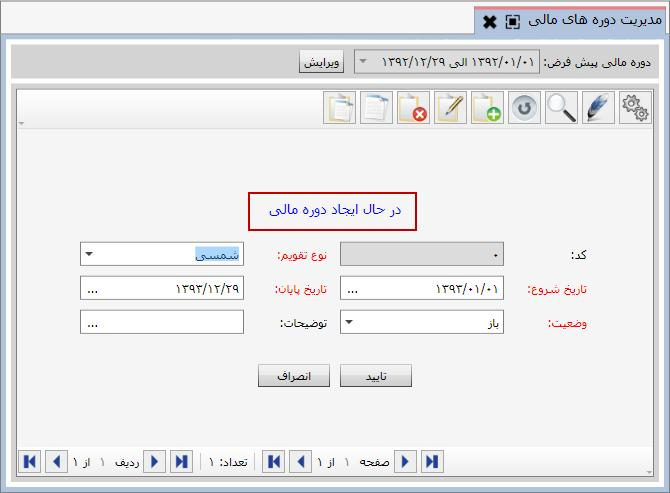

در این قسمت می توانید دوره های مالی خود را ایجاد و دوره مالی پیش فرض سیستم را تعیین کنید. صفحه زیر مربوط به این منو است.

می توانید دوره های مالی تعریف شده را در جدول شکل بالا مشاهده کنید. همچنین برای تعریف دوره مالی جدید روی گزینه اضافه کلیک کنید تا فرم مربوطه باز شود.

نوع تقویم ایجادی را از این قسمت انتخاب کنید.
تاریخ شروع/ تاریخ پایان دوره مالی مورد نظر را وارد کنید.
می توانید وضعیت دوره مالی خود را تعیین کنید. اگر می خواهید فعال باشد «باز» را انتخاب کنید و اگر می خواهید غیر فعال باشد «بسته» را انتخاب کنید. دوره مالی با وضعیت باز پس از بستن همه حساب ها و صدور سند اختتامیه به صورت اتوماتیک بسته می شود. در آخر اگر توضیحاتی نیاز بود بنویسید و روی کلید تایید کلیک کنید تا دوره مالی مورد نظر ایجاد شود.
همچنین از صفحه مربوط به مدیریت دوره های مالی می توانید دوره مالی پیش فرض را انتخاب کنید.

از این قسمت روی ویرایش کلیک کنید و از لیست کشویی که باز می شود دوره مالی را که می خواهید دوره مالی پیش فرض باشد را انتخاب نمایید.